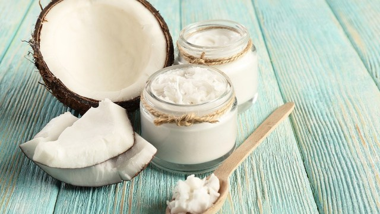

Most people are not aware of the incredible benefits that Coconut Oil can provide for your body. Is Coconut Oil just another trendy "superfood" that everyone will forget very soon? We want discuss about that here.

1. Contains Healthy Fatty Acids
Coconut oil is high in certain saturated fats. These fats have different effects in the body compared with most other dietary fats.
The fatty acids in coconut oil can encourage your body to burn fat, and they provide quick energy to your body and brain. They also raise HDL (good) cholesterol in your blood, which may help reduce heart disease risk
(1).
Most dietary fats are categorized as long-chain triglycerides (LCTs), while coconut oil contains some medium-chain triglycerides (MCTs), which are shorter fatty acid chains. When you eat MCTs, they tend to go straight to your liver. Your body uses them as a quick source of energy or turns them into ketones.
Ketones can have powerful benefits for your brain, and researchers are studying ketones as a treatment for epilepsy, Alzheimer’s disease, and other conditions.
SUMMARY
Coconut oil is high in MCTs, a type of fat that your body metabolizes differently than most other fats. MCTs are responsible for many of the health benefits of coconut oil.
2. Increase Your Metabolism
While some people think obesity is just a matter of how many calories someone eats, the source of those calories is important, too. Different foods affect your body and hormones in different ways.
Coconut oil contains medium-chain tryglycerides MCTs. These fatty acids are easily absorbed and can increase the number of calories you burn
(2).
One study found that 15–30 grams of MCTs increased the number of calories burned by an average of 120 over a 24-hour period
(3).
SUMMARY
Coconut oil contains medium-chain tryglycerides MCTs. These MCTs are good for fat burning increasing the number of calories you burn, thus increasing metabolism.
3. Safe to Cook at High Temperatures
Coconut oil has a very high saturated fat content. In fact, about 87% of its fat is saturated. This feature makes it one of the best fats for high-heat cooking, including frying.
Saturated fats retain their structure when heated to high temperatures, unlike the polyunsaturated fatty acids found in vegetable oils which are much more fragile when exposed into heat.
Oils such as corn and sunflower are converted into toxic compounds when heated. These may have harmful effects on health
(4).
SUMMARY
The structure of saturated fats is very resistant to high temperatures, unlike polyunsaturated oils which are found in other vegetable oils such as corn and sunflower.
4. It has antimicrobial effects
Lauric acid makes up about 50% of the fatty acids in coconut oil
(5).
When your body digests lauric acid, it forms a substance called monolaurin. Both lauric acid and monolaurin can kill harmful pathogens, such as bacteria, viruses, and fungi
(6).
For example, test-tube studies show that these substances help kill the bacteria Staphylococcus aureus, which causes staph infections, and the yeast Candida albicans, a common source of yeast infections in humans
(7, 8).
There’s also some evidence that using coconut oil as a mouthwash — a process called oil pulling — benefits oral hygiene, though researchers consider the evidence weak
(9)
SUMMARY
Using coconut oil as a mouthwash may prevent mouth infections, and improve oral hygiene overall.
5. May raise HDL cholesterol
Coconut oil contains natural saturated fats that increase HDL (good) cholesterol levels in your body. They may also help turn LDL (bad) cholesterol into a less harmful form.
In one study in 40 women, coconut oil reduced total and LDL (bad) cholesterol while increasing HDL, compared with soybean oil
(10) .
Another study in 116 adults showed that following a diet program that included coconut oil raised levels of HDL (good) cholesterol in people with coronary artery disease
(11).
SUMMARY
A few studies have shown that coconut oil can raise blood levels of HDL (good) cholesterol, which is linked to improved metabolic health and a lower risk of heart disease.
6.Protect Your Hair From Damage
Coconut oil can help keep your hair healthy.
One study compared the effects of coconut oil, mineral oil, and sunflower oil on hair.
Only coconut oil significantly reduced protein loss from hair when applied before or after shampooing. This result occurred with damaged as well as healthy hair.
Researchers concluded that the unique structure of lauric acid — the main fatty acid in coconut oil — can penetrate the hair shaft in a way that most other fats can’t
(11).
SUMMARY
Only coconut oil significantly reduced protein loss from hair when applied before or after shampooing, probably due to lauric acid.
7.Combat Candida
Candida albicans is the fungus responsible for yeast infections, which commonly occur in warm, moist areas of the body, such as the mouth or vagina.
Test-tube studies suggest that coconut oil may help fight candida infections
(12,13)
Researchers found coconut oil to be as effective as fluconazole, the antifungal medication typically prescribed for candida infections
(14).
SUMMARY
Coconut oil might be as effective as fluconazole, the antifungal medication typically prescribed for candida infections